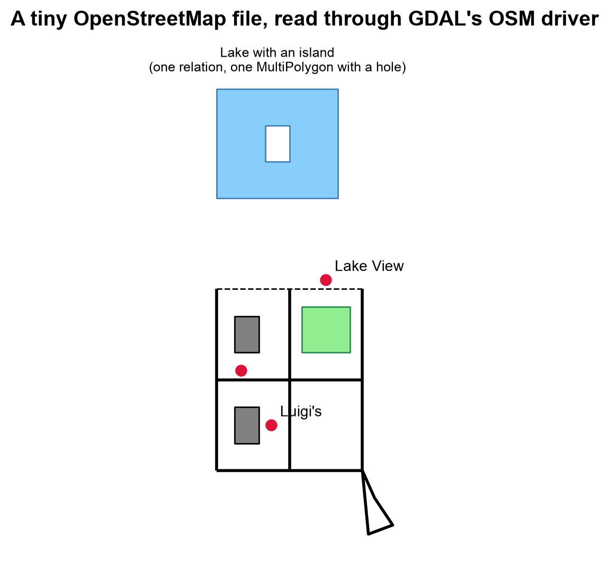
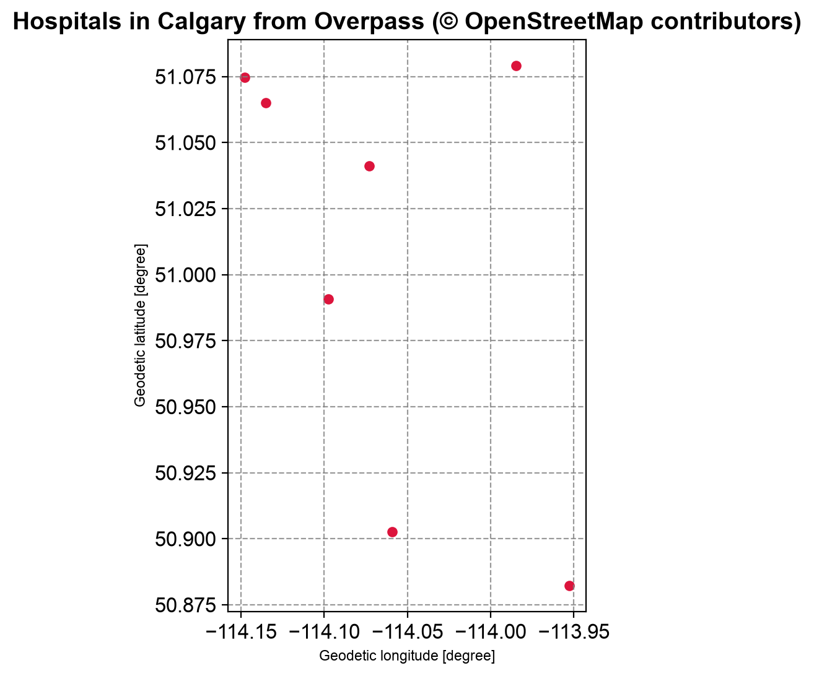
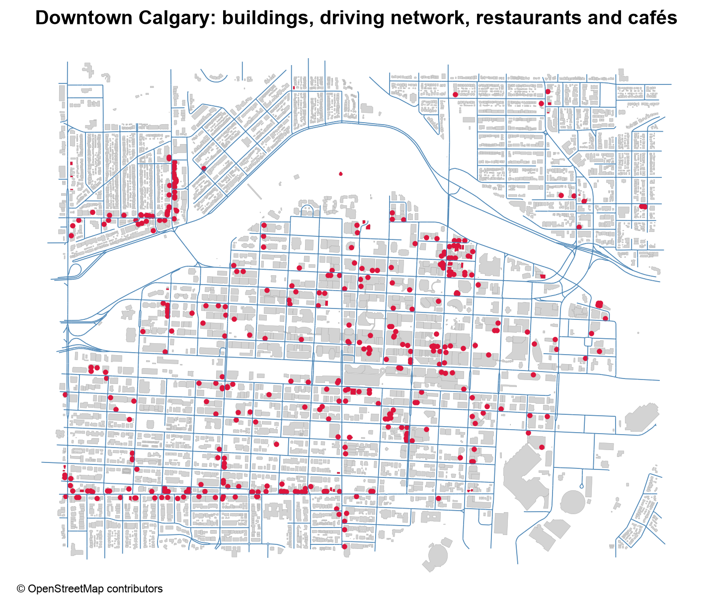
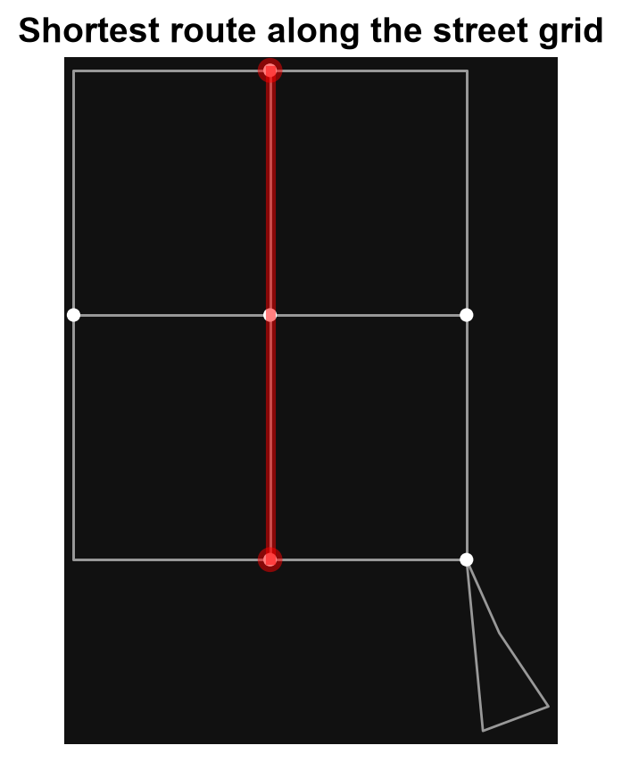
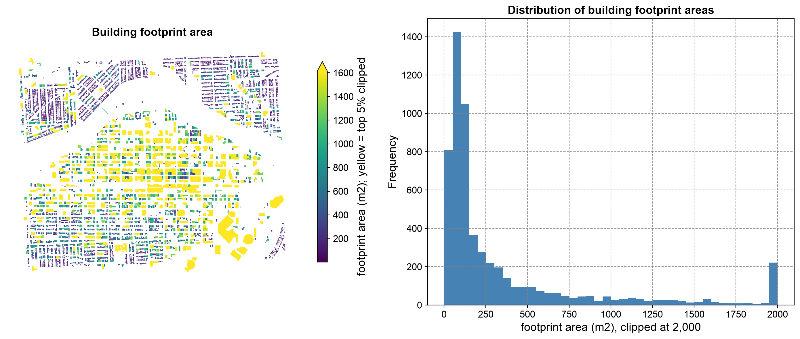

Remark
Please be aware that these lecture notes are accessible online in an ‘early access’ format. They are actively being developed, and certain sections will be further enriched to provide a comprehensive understanding of the subject matter.
3.5. OpenStreetMap Data#
3.5.1. Learning Objectives#
By the end of this section, you should be able to:
Describe OpenStreetMap’s crowd-sourced, tag-based data model (nodes, ways, relations) and how its elements become GIS geometries.
Query OpenStreetMap data with the Overpass API and load extracts with
osmnxandpyrosm.Choose between
pyrosmandosmnxbased on extract size and workflow.Explain why OpenStreetMap data requires a coordinate reference system check before analysis, and choose a suitable projected CRS.
Assess the completeness of tags in an extract and credit OpenStreetMap correctly.
Section Goal
Unlike the file formats covered so far, OpenStreetMap (OSM) is not delivered as a single
downloadable dataset with one schema — it is a live, global, crowd-sourced database
queried or extracted on demand. This section introduces its data model and shows two
Python tools, pyrosm and osmnx, for turning OSM data into GeoDataFrames.
3.5.2. The OpenStreetMap Data Model#
OpenStreetMap [OpenStreetMap Contributors, 2026] represents the world with three primitive element types:
Nodes: single points with latitude/longitude (e.g., a fire hydrant, a tree).
Ways: ordered lists of nodes forming a line or polygon (e.g., a road, a building outline).
Relations: ordered collections of nodes, ways, and other relations, used to model structures a way alone cannot express (e.g., a bus route, a multi-polygon lake with islands).
Every element carries tags — free-form key=value pairs — instead of a fixed
schema. A single node might be tagged amenity=restaurant, cuisine=italian, and
name=Luigi's, while a way might be tagged highway=residential and maxspeed=30.
This flexibility is OSM’s greatest strength and its main data-quality challenge: tagging
conventions are community-maintained and not always applied consistently [Haklay, 2010].
Element |
Stores |
Example |
|---|---|---|
Node |
One position (latitude, longitude) and optional tags |
A restaurant, a fire hydrant |
Way |
An ordered list of node references (the geometry is not stored in the way) |
A street, a building outline |
Relation |
An ordered list of members (nodes, ways, or relations), each with a role |
A bus route, a lake with an island |
Key |
Describes |
Typical values |
|---|---|---|
|
Roads, paths, and other ways for travel |
|
|
Building footprints |
|
|
Services and facilities |
|
|
Land cover and use |
|
|
Names and addresses |
|
3.5.2.1. How OSM Elements Become GIS Geometries#
OSM stores topology (ways point at nodes), not ready-made geometry, so every tool must decide how to turn elements into points, lines, and polygons. The rules matter, because they explain which layer a feature lands in:
Element |
Becomes |
Rule |
|---|---|---|
Node |
Point |
Usually only when it carries tags of its own; untagged nodes are just vertices of ways |
Open way |
LineString |
A road or path |
Closed way |
Polygon or LineString |
A polygon only if its tags say it is an area (for example |
Relation of type |
MultiPolygon |
Outer ways form the shell; inner ways become holes |
Relation of type |
MultiLineString |
The member ways joined into one route |
To see this concretely, the next cell writes a tiny OpenStreetMap file by hand. It is in the real .osm XML format: nodes, ways that reference nodes, and relations that reference ways, with tags on each. It contains a three-by-three street grid, a roundabout, two buildings, a park, a lake with an island, three tagged points, and a bus route. Then it parses the XML directly and counts the elements and tag keys.
Elements: {'node': 35, 'way': 12, 'relation': 2}
Tag keys: {'amenity': 1, 'name': 11, 'cuisine': 1, 'tourism': 1, 'emergency': 1, 'highway': 7, 'maxspeed': 2, 'junction': 1, 'building': 2, 'addr:housenumber': 1, 'addr:street': 1, 'leisure': 1, 'type': 2, 'natural': 1, 'route': 1, 'ref': 1}
One of each, as stored in the file:
<node id="70" lat="48.0005" lon="11.0009" version="1"><tag k="amenity" v="restaurant" /><tag k="name" v="Luigi's" /><tag k="cuisine" v="italian" /></node>
<way id="101" version="1"><nd ref="1" /><nd ref="2" /><nd ref="3" /><tag k="highway" v="residential" /><tag k="name" v="Main Street" /><tag k="maxspeed" v="30" /></way>
<relation id="130" version="1"><member type="way" ref="120" role="outer" /><member type="way" ref="121" role="inner" /><tag k="type" v="multipolygon" /><tag k="natural" v="water" /><tag k="name" v="Demo Lake" /></relation>
The file holds 35 nodes, 12 ways, and 2 relations. Only three nodes (the points of interest) carry tags; the other 32 are just vertices of ways. The two lake rings (ways 120 and 121) carry no tags at all, because the tags natural=water and name=Demo Lake sit on the relation that joins them. Keys are free-form: name is used 11 times, while cuisine and tourism appear once each.
Notice that the way holds only references to nodes (<nd ref=...>), and the relation holds only references to ways. GDAL’s OSM driver resolves those references into geometries and sorts the results into five layers [GDAL/OGR contributors, 2026]. The cell below lists them, then maps the data, using the tags to style each layer.
points 3 features Point
lines 7 features LineString
multilinestrings 1 features MultiLineString
multipolygons 4 features MultiPolygon
other_relations 0 features GeometryCollection
Tags without their own column are kept in 'other_tags':
name other_tags
Luigi's "amenity"=>"restaurant","cuisine"=>"italian"
Lake View "tourism"=>"viewpoint"
NaN "emergency"=>"fire_hydrant"
The 12 ways and 2 relations reappear as features in four layers. All seven highway ways, the roundabout included, are lines, and the three tagged closed ways plus the lake relation make up the four multipolygons. The bus route is the single multilinestring, and other_relations is empty. The two lake rings are not features of their own: they were consumed by the relation. The three points are the tagged nodes; tags that GDAL has no dedicated column for, such as amenity and emergency, are kept in other_tags.


Fig. 3.17 The hand-written OSM file as read through GDAL’s OSM driver: street grid, buildings, park, lake with an island, and three tagged points.#
Fig. 3.17 shows each element type in its GIS form. The streets form the grid, with the footway dashed; the buildings are gray and the park green; the three red points are the tagged nodes. The lake is one blue shape with a white hole where the island is, although the file never held a lake as a single object. The roundabout at the lower right is drawn as an outline, not as a filled disk, which the output below confirms.
The roundabout is a closed way, yet it is in the 'lines' layer: ['LineString'] | closed: True
The two closed building ways and the park are in the 'multipolygons' layer: 3 features from ways, plus 1 from a relation
The roundabout is a closed way, but because it is tagged highway=... and not as an area, it stays a line. The two buildings and the park, also closed ways but tagged as areas, became polygons. The lake never existed as a single object in the file: it was assembled from two ways by the multipolygon relation, with the inner way becoming a hole. This is why tools matter: a naive reader that turned every closed way into a polygon would draw the roundabout as a filled disk.
3.5.3. Querying with the Overpass API#
The Overpass API [OpenStreetMap Contributors, 2026] lets you query OSM’s database directly using a purpose-built query language, returning only the elements matching your filter rather than an entire regional extract.
A query has three parts: an optional output format and timeout ([out:json][timeout:60];), a set of filters that select elements, and an out statement that decides what to return. The query below asks for hospitals in Calgary, and it improves on a simple node-only query in three ways:
area["name"="Calgary"]["boundary"="administrative"]restricts the area to an administrative boundary, so another place that happens to be named Calgary does not match.nwrsearches nodes, ways, and relations. Hospitals are often mapped as building outlines (ways), and a node-only query would miss them.out center;returns a single center point for each way or relation, so every result has coordinates. (out body;returns tags and node references but no geometry for ways.)
Statement |
Returns |
|---|---|
|
Tags, and for ways the node references, but no coordinates for ways |
|
Tags plus one center point for each way and relation |
|
Tags plus the full coordinates of every way and relation |
|
Only the number of matching elements |
Overpass is well suited to targeted queries (e.g., “all hospitals in Calgary”) but
becomes slow or memory-intensive for large regional extracts — for those, a downloaded
.osm.pbf extract read locally is faster. It is also a shared public service: it enforces rate limits and timeouts, expects a meaningful User-Agent, and may reject requests when busy. Follow the same discipline as for any API (narrow queries, cache the response, retry with backoff).
Overpass returns JSON with an elements list. The cell below parses a sample response with that structure into a GeoDataFrame; the values are invented for illustration and are not real hospitals. Nodes carry lat and lon; ways and relations carry a center. The same function works on a live response.
| osm_type | osm_id | name | amenity | building | |
|---|---|---|---|---|---|
| 0 | node | 1001 | Example General Hospital | hospital | NaN |
| 1 | way | 2002 | Example Children's Hospital | hospital | yes |
| 2 | relation | 3003 | Example Regional Centre | hospital | NaN |
| 3 | way | 2004 | NaN | hospital | NaN |
Elements without a name tag: 1 of 4
Two things are visible even in this small sample. Results come back as different element types, which is why a node-only query would have missed some of them. And tags are uneven: one element has no name at all, a gap that no schema prevented. The optional cell below sends the real query (it is skipped if the service is unreachable).
Could not complete the Overpass request (ConnectionError); skipping this optional step.


Fig. 3.18 Hospitals in Calgary returned by the Overpass query, one center point per element (a snapshot). Data © OpenStreetMap contributors.#
All seven results in Fig. 3.18 are way elements: Calgary’s hospitals are mapped as building outlines, so a node-only query would have returned nothing. The points are the out center positions, spread over roughly 20 km from north to south. The live service changes over time, so a rerun may give a slightly different set.
3.5.4. Reading Extracts with pyrosm and osmnx#
Two Python libraries, osmnx [Boeing, 2017] and pyrosm [Tenkanen, 2026], are commonly used to turn OSM extracts into GeoDataFrames, and choosing between them mostly comes down to extract size and how much control you need over the query:
Library |
Best for |
Notes |
|---|---|---|
|
Street networks, walkability/routing analysis |
Downloads directly from Overpass; convenient graph objects for network analysis |
|
Bulk extraction from local |
Much faster for large areas since it parses a local file instead of querying a live API |
An .osm.pbf file is OSM data in a compact binary encoding (Protocolbuffer Binary Format), far smaller and faster to read than the XML form. Extracts are published by several providers:
Source |
Offers |
Typical use |
|---|---|---|
Geofabrik |
Country and regional |
Analysis over a whole region |
BBBike |
Extracts for many cities, or for a custom area you draw |
City-scale analysis |
Overpass API |
Query results, by filter and area |
Targeted, small requests |
Planet file |
The whole database |
Global processing (very large) |
3.5.4.1. Bulk Extraction with pyrosm#
pyrosm reads a local PBF file and returns GeoDataFrames for the layers you ask for: buildings, points of interest, the street network, and more. It can fetch a city extract from BBBike by name and caches it, so the download happens only once. The next cell uses the Calgary, Alberta extract, restricts it to a bounding box around downtown so the layers stay small, and reads buildings, restaurant and café points of interest, and the driving network from the same file. The three requests parse the file locally, which is why several layers from one file are cheap.
Extract: Calgary.osm.pbf, 42.40 MB (read within a downtown bounding box)
buildings : 5796 {'Polygon': 5796}
pois : 419 {'Point': 380, 'Polygon': 39}
network : 5867 street segments joining 5505 nodes
CRS : EPSG:4326
The downtown box holds 5,796 building polygons, 419 restaurant and café features, and 5,887 street segments joining 5,522 nodes, all in WGS 84. Of the 419 food and drink features, 39 are mapped as building outlines rather than points, another reason to expect mixed geometry types. The warning reports that one building relation was cut by the box and has incomplete geometry; complete_relations=True would fetch its missing members.


Fig. 3.19 Downtown Calgary: buildings, driving network, and restaurant and café points of interest. Data © OpenStreetMap contributors.#
The three layers in Fig. 3.19 come from one local file. Restaurants and cafés concentrate in the dense core and along a few corridors, including an east–west avenue near the southern edge of the box and a north–south street in the north-west. The curved empty band across the north is the river valley, where there are few buildings.
The earlier version of this section used a different region, CraterLake, which pyrosm also downloads from BBBike. The cell below reads it the same way, with a custom filter that keeps restaurants and ranger stations. It is optional, and is skipped if the download fails.
Crater Lake extract: CraterLake.osm.pbf
buildings: 111513
pois : 324
The count of 111,513 buildings is far larger than the downtown Calgary read, which suggests that this extract covers a wide area around the lake and that no bounding box was applied. Check an extract’s extent before assuming what it contains.
3.5.4.2. Street Networks with osmnx#
osmnx is built for street networks. It does not return a plain table: it returns a graph (a networkx multi-digraph) in which intersections are nodes and street segments are edges, ready for routing and network statistics. It then converts the graph to GeoDataFrames when you want to map or filter it.
In normal use, osmnx fetches the data itself:
graph = ox.graph_from_place("Crater Lake National Park, Oregon, USA", network_type="drive")
That call geocodes the place name and queries Overpass, so it needs a network connection and uses the shared services politely. osmnx can also build a graph from a local OSM XML file, which is what the next cell does, using the tiny file from the start of this section. It converts the graph to node and edge tables, finds a shortest path along the street grid, and draws the route.
Graph: 6 nodes (intersections and dead ends), 19 directed edges
Edge columns: ['osmid', 'highway', 'maxspeed', 'name', 'oneway', 'reversed', 'length', 'geometry', 'junction']
Shortest path from node 2 to node 8: nodes [2, 5, 8], 222 m


Fig. 3.20 The shortest route (red) between two nodes of the street graph built from the small OSM file.#
In Fig. 3.20, the shortest path runs straight up the middle road through the central intersection (nodes 2, 5, and 8), 222 m in all. The nine grid nodes of the file became six graph nodes: simplification merged away the three corners where only two streets meet (nodes 1, 7, and 9), which is why some edges below carry two street names.
Look at the name column of the edge table. osmnx simplifies the graph by merging chains of segments between intersections, and when merged segments carry different values, the attribute becomes a list (for example, two street names for one merged edge). Code that assumes every attribute is a single value will fail on such edges, so check the types before filtering or grouping.
Types found in the 'name' column: {'str': 12, 'list': 6, 'float': 1}
| name | highway | length | |||
|---|---|---|---|---|---|
| u | v | key | |||
| 2 | 4 | 0 | [West Road, Main Street] | residential | 200.479924 |
| 4 | 8 | 0 | [Elm Path, West Road] | [residential, footway] | 200.476463 |
| 2 | 0 | [West Road, Main Street] | residential | 200.479924 | |
| 6 | 8 | 0 | [East Road, Elm Path] | [footway, tertiary] | 200.476463 |
| 8 | 6 | 0 | [East Road, Elm Path] | [footway, tertiary] | 200.476463 |
Of the 19 edges, 12 have a plain string, 6 have a list from merged segments, and one is a float: the roundabout has no name tag, so its value is NaN. Three types in one column mean that normalization must come before any grouping or filtering.
Use pyrosm when you already have (or can download once) a .osm.pbf extract and need
several different layers (buildings, roads, POIs) from it repeatedly — parsing the file
locally avoids re-querying a shared API. Use osmnx when the goal is a routable network
graph or a one-off query where convenience matters more than raw speed. The optional cell below runs the original osmnx example for Crater Lake National Park, so it needs a network connection.
Crater Lake drive network: 23 nodes, 49 edges
The park’s whole drive network has only 23 nodes and 49 edges, a very sparse network next to the 5,522 nodes of downtown Calgary.
3.5.5. Coordinate Reference System Considerations#
OpenStreetMap data is always distributed in WGS84 (EPSG:4326), geographic coordinates in degrees. This is fine for storage and web mapping, but degree-based coordinates make area, length, and distance calculations meaningless without reprojection first.
Choosing the projected CRS needs care. The usual choice for a local study area is a UTM zone, but UTM [Snyder, 1987] divides the world into 6-degree-wide zones, and a zone is accurate only near its own central meridian. The earlier version of this section used EPSG:32612 (UTM zone 12N, covering 114°W to 108°W) for Crater Lake, Oregon, which lies near 122°W, in zone 10 (EPSG:32610). The result is still in meters, so nothing signals the mistake. GeoPandas can pick the zone for you with estimate_utm_crs(), from the data’s own extent.
The cell below measures the same Calgary buildings in four ways: in the zone GeoPandas chooses, in the two neighboring zones, and in a zone that is far from the study area (zone 17). It also shows what happens if you ask for the area in degrees.
UTM CRS chosen by GeoPandas for this extent: 32611
Total footprint area computed on the raw geometry: 0.000310 (square DEGREES, not usable)
EPSG:32611 (chosen zone) total 2.420 km2 difference from chosen zone: +0.0%
EPSG:32610 (zone to the west) total 2.441 km2 difference from chosen zone: +0.9%
EPSG:32612 (zone to the east) total 2.420 km2 difference from chosen zone: +0.0%
EPSG:32617 (zone 17, far away) total 2.741 km2 difference from chosen zone: +13.2%
The chosen zone, 32611, gives 2.420 km² of footprints, and the zone to the west is 0.9% higher. The zone to the east agrees exactly because downtown Calgary, at about 114.07°W, lies almost on the border between zones 11 and 12 and is nearly equally far from both central meridians (117°W and 111°W). The zone 17 result is inflated by 13.2%, and the raw geometry gives only 0.00031 square degrees, which is not an area.
Neighboring zones differ from the chosen one by about one percent or less, but a zone far from the data inflates the areas by more than ten percent, with no error message. Now we can compute footprint areas properly and look at them.
count 5796.0
mean 417.6
std 1161.6
min 2.0
25% 75.7
50% 126.6
75% 355.2
max 56041.9


Fig. 3.21 Building footprint area in downtown Calgary: a map (left) and a histogram clipped at 2,000 m² (right). Data © OpenStreetMap contributors.#
Footprint areas in Fig. 3.21 are strongly right-skewed: the median is 127 m², the mean 418 m², and the largest footprint 56,042 m². The map shows where the weight lies: small homes (purple) fill the north-western blocks, while the largest footprints (yellow, clipped at the 95th percentile) concentrate in the downtown core and in a few large complexes at the lower right. The spike at 2,000 m² in the histogram is not a real peak but the clipped tail, with every larger building piled into the last bin.
Always reproject to a suitable projected CRS before computing areas, lengths, or buffers — a step that is easy to forget because OSM data loads without error in WGS84 and only produces silently wrong numbers.

3.5.7. Crediting OpenStreetMap#
OpenStreetMap data is published under the Open Database License (ODbL) [Open Data Commons, 2026]. In practice, this means two obligations: you must credit the source, and derived databases that you publish must be shared under the same license. The expected credit line is “© OpenStreetMap contributors” [OpenStreetMap Contributors, 2026], and it belongs on the map itself, as in the figure above, not only in a notebook or a report’s fine print. Check the license terms of any other layer you combine with OSM data before you publish the result.
3.5.8. When to Use OpenStreetMap Data#
Rapid prototyping without licensing negotiation (OSM is under the Open Database License).
Street network and routing analysis.
Filling gaps where authoritative government data is unavailable or costly.
Applications where community-maintained currency (frequent contributor edits) outweighs the need for official certification.
Caveats: coverage and tagging completeness vary significantly by region; always
validate attribute completeness (for example, missing addr:housenumber tags) before
treating an extract as authoritative.
For a hands-on comparison of Overpass queries, pyrosm, and osmnx against the same
study area, see the labs.
Practice
Choose a small area you know. Download its extract from BBBike (or reuse the Calgary extract from this section), read the buildings and the driving network with pyrosm, and project both with estimate_utm_crs(). Report the total building footprint area, the total street length, and the share of buildings with a name tag. Then write the Overpass query that would return the restaurants in the same area, using nwr and out center.
3.5.9. Key Terms#
Term |
Meaning |
|---|---|
Node, way, relation |
The three OSM element types: a point, an ordered list of nodes, and a collection of members. |
Tag |
A free-form |
Overpass API |
A public query service that returns only the OSM elements matching a filter. |
|
The Overpass shorthand for nodes, ways, and relations. |
|
OSM data in a compact binary encoding, used for regional and city extracts. |
Multipolygon relation |
A relation that builds a polygon with holes from outer and inner ways. |
|
A Python library for fast bulk extraction from local PBF files. |
|
A Python library that builds street-network graphs from OSM data. |
UTM zone |
One of the 60 six-degree-wide zones of a metric projection, accurate near its central meridian. |
ODbL |
The Open Database License, requiring credit and share-alike for derived databases. |
3.5.10. Review Questions#
Name the three OSM element types, and say what each one stores.
A closed way is tagged
highway=residential,junction=roundabout. Is it a polygon or a line, and why?Why does
out body;leave some Overpass results without coordinates, and what doesout center;do instead?When would you choose
pyrosmrather thanosmnx, and when the reverse?After simplification, an
osmnxedge has a list in itsnamefield. What caused this, and what problem can it cause?Why is it risky to hard-code a UTM zone, and how can you avoid it?
A map of buildings shows no house numbers in one neighborhood. Give two possible explanations.
What credit must accompany a map built from OSM data, and where should it appear?
3.5.11. Summary#
OpenStreetMap trades a fixed schema for flexible, community-maintained tags organized
into nodes, ways, and relations, queried live through Overpass or extracted in bulk as
.osm.pbf files. pyrosm suits repeated bulk extraction from a local file, while
osmnx suits routable network graphs and one-off queries; either way, reproject out of
WGS84 into a suitable projected CRS before measuring area or distance, measure how complete the tags are
before relying on them, and credit OpenStreetMap contributors in what you publish.
The next section steps back from individual formats to compare them directly and outlines a safe workflow for converting between them.